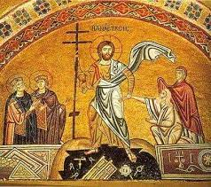
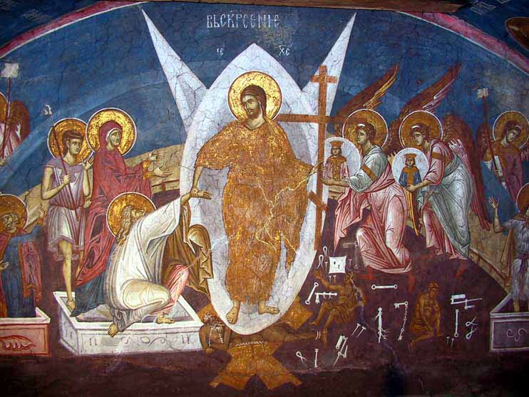

耶稣基督的复活
总纲
- 来龙去脉
- 耶稣复活的意义
- 应用
复习：福音派基督教代赎的教义(penal substituion)
- 这代赎是基于上帝的圣洁，因祂是完全圣洁、厌恶并追讨罪。
- 罪带来的刑罚必须被满足。
- 人无力偿还自己的罪所带来的刑罚；相反，罪的刑罚是死。
- 只有上帝才能偿还罪的刑罚，但祂必须成为人的样式才能为人付代价。
- 神人二性的耶稣基督借着自己的死，赎了人的罪。
- 赎罪必须通过这种方式来成全
复习：基督的降卑与高升

耶稣的复活

- 空坟墓
- 玛利亚看见复活后的耶稣
- 以马忤斯的路途
- 耶稣向其他门徒们显现
来龙去脉
耶稣复活后的身体
- 是真实的，是物质的。不是幻影（Docetism）
- 祂的门徒们能够认出祂,看到了祂手上的钉痕；
- 他们摸了祂；
祂的身体不是虚幻的
- 基督复活后的身体是带着新特性的荣耀的身体
- 永不朽坏
祂的身体和以前又是不同的
耶稣复活的意义
- 耶稣的神性和祂的救赎被信徒们所承认和宣讲
- 加尔文说过 “基督不曾舍弃祂的神性，却将这隐藏了一段时间。”
- 罗马书1章：3 论到他儿子我主耶稣基督。按肉体说，是从大卫后裔生的； 4 按圣善的灵说，因从死里复活，以大能显明是神的儿子。
- 于是从摩西和众先知起，凡经上所指着自己的话都给他们讲解明白了。（路加福音24章25-27节）
- 多馬說：「我的主！我的神！」 （約翰福音 20:28）
福音的宣讲- Kerygma
基督复活的意义
新的创造的开始
- 亚当与耶稣的对比
使徒行传2：36 故此，以色列全家当确实地知道：你们钉在十字架上的这位耶稣，神已经立他为主、为基督了。
- 哥林多后书5:17「若有人在基督里他就是新造的人，旧事已过，都变成新的了。」
- 38 彼得说：“你们各人要悔改，奉耶稣基督的名受洗，叫你们的罪得赦，就必领受所赐的圣灵。 39 因为这应许是给你们和你们的儿女，并一切在远方的人，就是主我们神所召来的。
耶稣复活的意义


- 在那里，神的形象所托付的“统治权”最终在耶稣基督身上实现了。
- 只有在耶稣复活的基础上，人类的公义和和平的统治才得以恢复。
- By his sanctification, we are sanctified, and by his reign the world is assured its participation in the cosmic glory
人的神的形象的恢复
耶稣复活的意义

- 神的国可以定义为，基督的直接临在和统治
- 透过耶稣的死、复活和教会的成立，神的国真正的降临在全地
- 已然未然的概念 - 上帝的国已经临到，却还没完成(consummate)。
神国的降临
耶稣复活对信徒的意义
-
耶稣的复活是那初熟的果子 哥林多前书15：20但基督已经从死里复活，成为睡了之人初熟的果子。 21 死既是因一人而来，死人复活也是因一人而来。
- 基督的复活是祂子民的救赎、成圣、战胜邪恶和将来复活得荣耀的凭据。他们先是在地上经历美妙的基督的新生命的开始，然后将来会在天堂里经历永远的荣耀。
- 我们若是与基督同死，就信必与祂同活。（罗6:8）
信徒们领受身为神儿女的凭据
应用
海德堡要理问答

45问：基督的复活为我们带来怎样的益处？
回答：第一，祂藉着复活战胜死亡，叫我们有份于祂藉死而为我们所成全的公义（
罗4:25 耶稣被交给人，是为我们的过犯；复活，是为叫我们称义。
）；第二，藉着祂的大能，我们也复活了，得了新的生命（弗2:4-5 然而神既有丰富的怜悯，因祂爱我们的大爱，当我们死在过犯中的时候，便叫我们与基督一同活过来。
）。第三，基督的复活对我们而言，就是我们必荣耀复活所凭的确据（腓3:20-21 我们却是天上的国民，并且等候救主，就是主耶稣基督从天上降临。祂要按著那能叫万有归服自己的大能，将我们这卑贱的身体改变形状，和祂自己荣耀的身体相似。
）